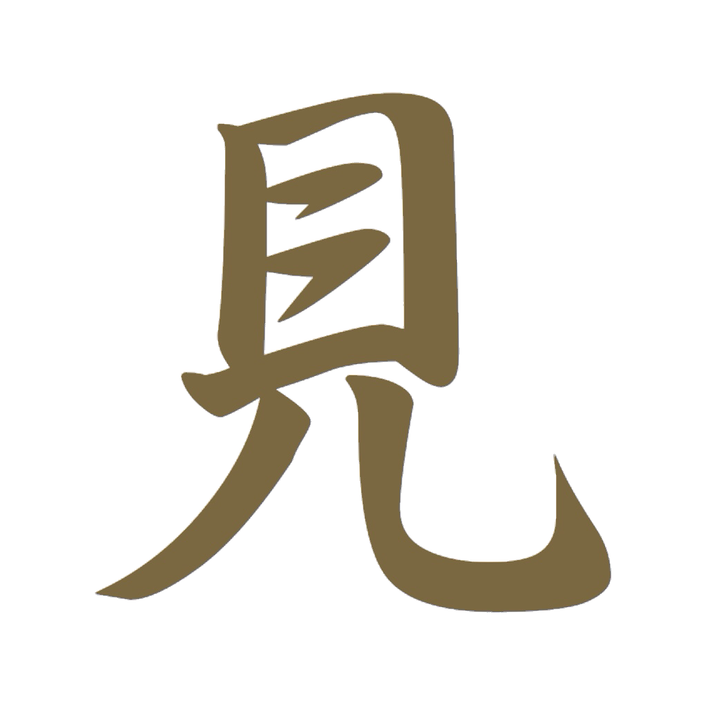
見 (ケン / み・る、み・える、み・せる) – See
- 見る【みる】– To see, to look at
- 見える【みえる】– To be visible
- 見せる【みせる】– To show
- 意見【いけん】– Opinion, view
- 見学【けんがく】– Observation, field trip
- 発見【はっけん】– Discovery
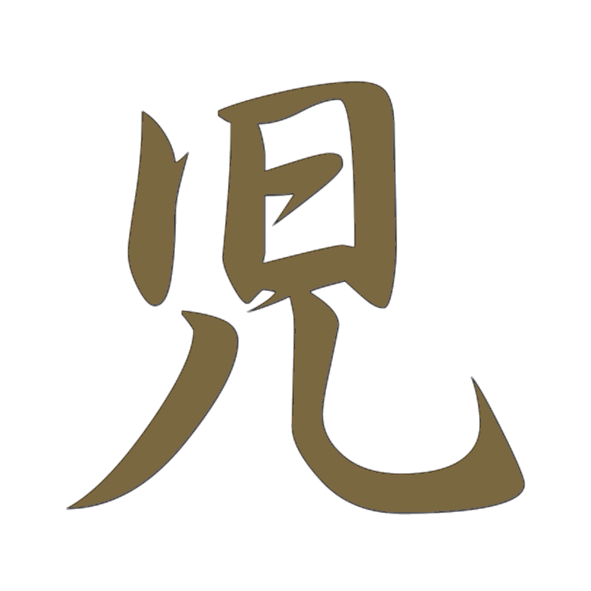
児 (ジ / に) – Newborn Babe
- 児童【じどう】– Child, juvenile
- 幼児【ようじ】– Infant, toddler
- 小児科【しょうにか】– Pediatrics
- 孤児【こじ】– Orphan
- 胎児【たいじ】– Fetus
- 新生児【しんせいじ】– Newborn baby
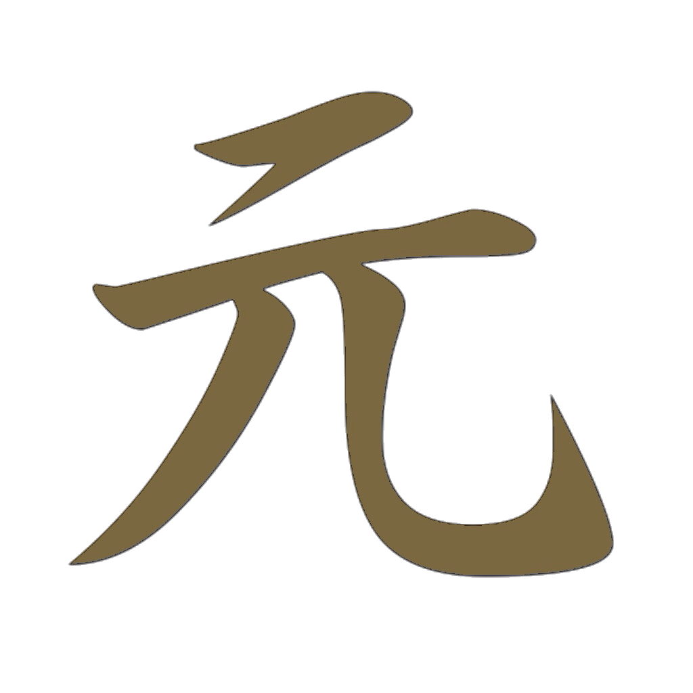
元 (ゲン / ガン / もと) – Beginning
- 元【もと】– Origin, base, former (Kunyomi standalone)
- 元気【げんき】– Healthy, energetic
- 元日【がんじつ】– New Year’s Day
- 元祖【がんそ】– Founder, originator
- 地元【じもと】– Local area, hometown
- 元通り【もとどおり】– As before, back to original state
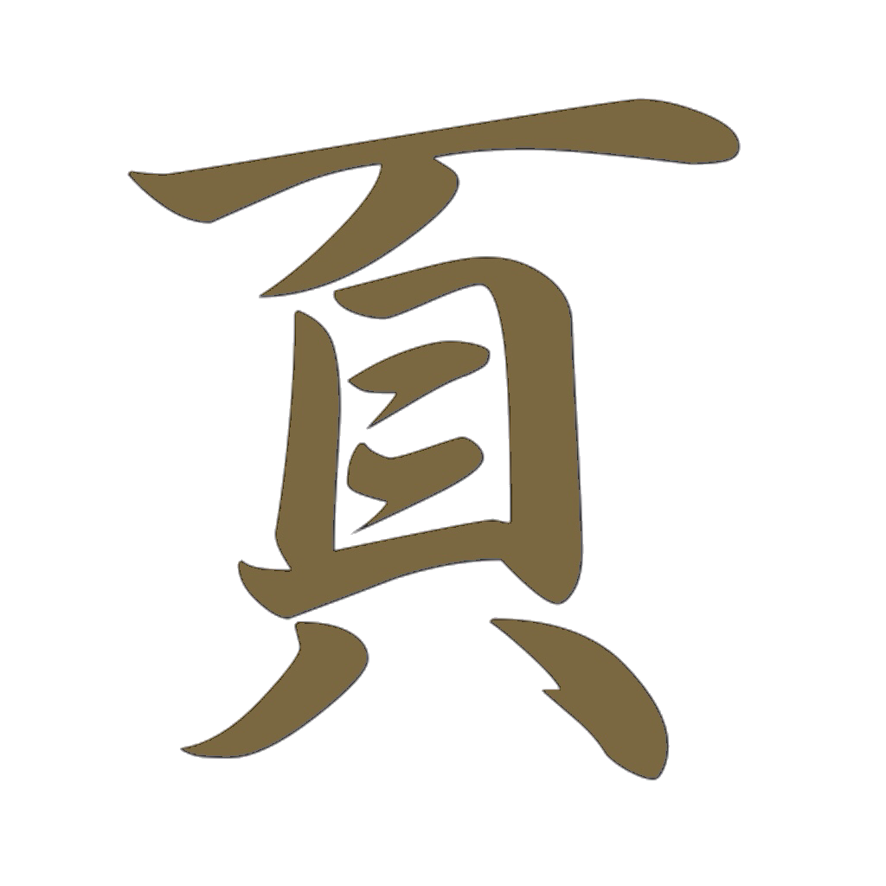
頁 (ケツ) – Page
- 頁【ページ】– Page (often used as a counter; rarely on its own)
- 頁数【けっすう】– Number of pages
- 頭頁【とうけつ】– Front page (rare, literary use)
- 最終頁【さいしゅうけつ】– Last page
- 頁脚【けっきゃく】– Page footer (layout/design term)
- 頁頭【けっとう】– Page header
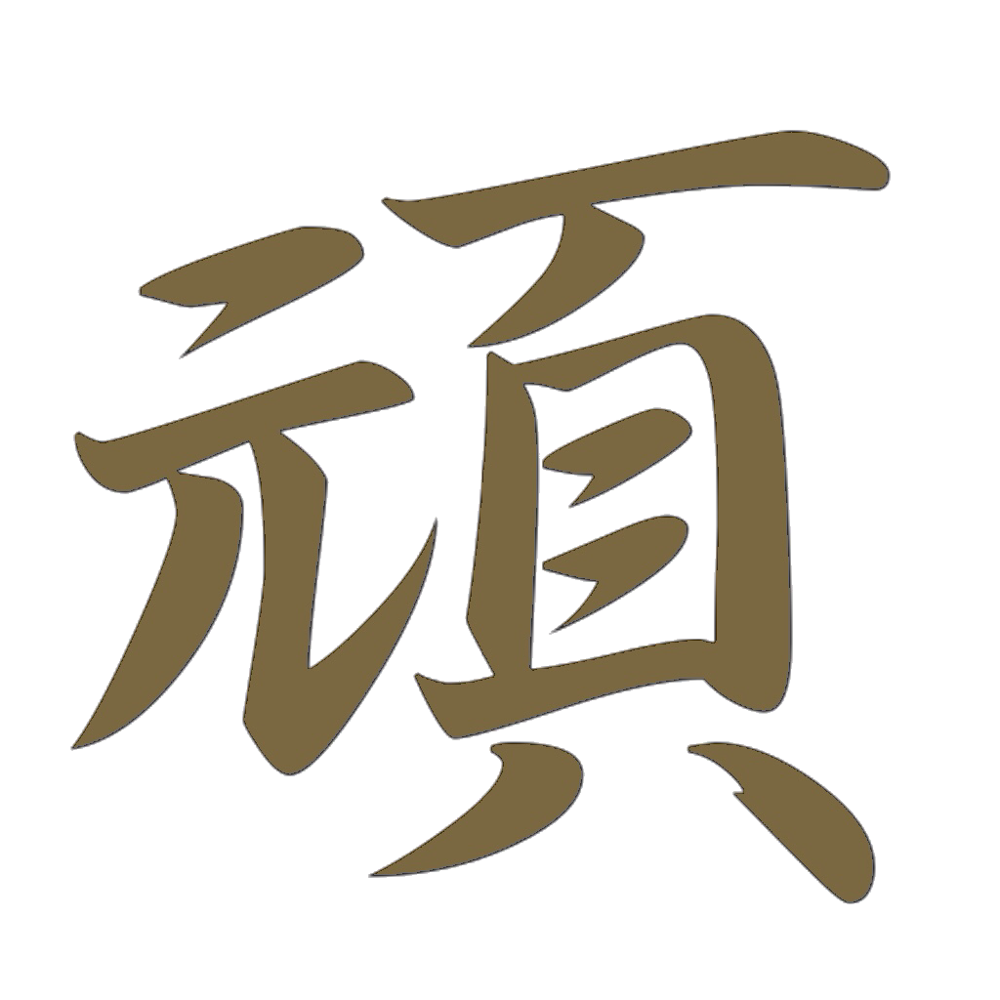
頑 (ガン) – Stubborn
- 頑固【がんこ】– Stubborn, obstinate
- 頑張る【がんばる】– To do one’s best, to persist
- 頑丈【がんじょう】– Solid, sturdy, robust
- 頑迷【がんめい】– Pigheaded, narrow-minded
- 頑健【がんけん】– Healthy and strong
- 頑愚【がんぐ】– Stupidly stubborn (literary/rare)
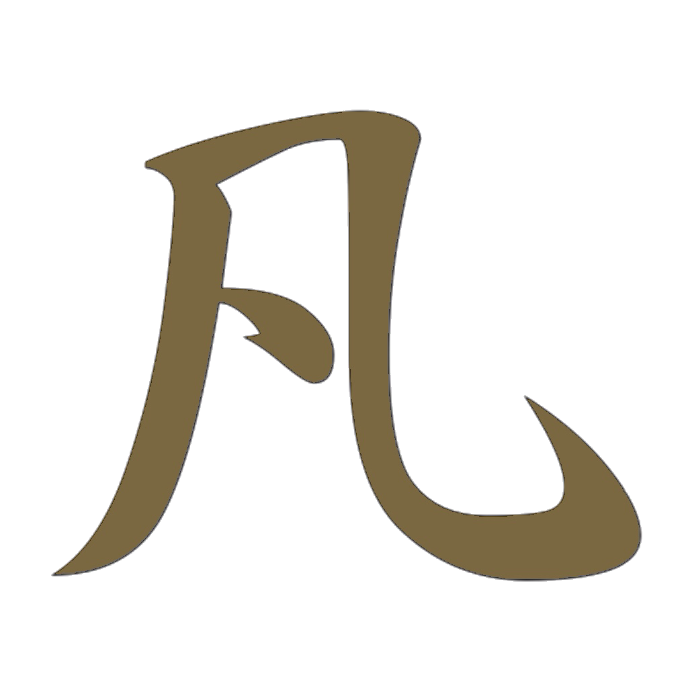
凡 (ボン / ハン) – Mediocre
- 凡人【ぼんじん】– Ordinary person, mediocrity
- 平凡【へいぼん】– Commonplace, mediocre
- 凡例【はんれい】– Usage example, explanatory note
- 凡才【ぼんさい】– Average talent
- 凡庸【ぼんよう】– Mediocrity, dullness
- 非凡【ひぼん】– Extraordinary, uncommon (antonym)
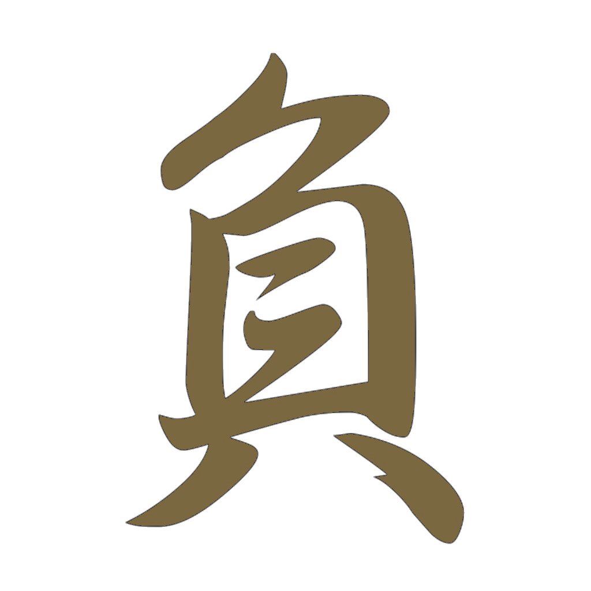
負 (フ / ま・ける、ま・かす、お・う) – Defeat
- 負ける【まける】– To lose (a match), to be defeated
- 負かす【まかす】– To defeat, to beat (someone)
- 負う【おう】– To bear, to carry (a burden)
- 勝負【しょうぶ】– Match, contest (win or lose)
- 背負う【せおう】– To carry on one's back, to take responsibility
- 負傷【ふしょう】– Injury, wound (esp. in battle or sports)
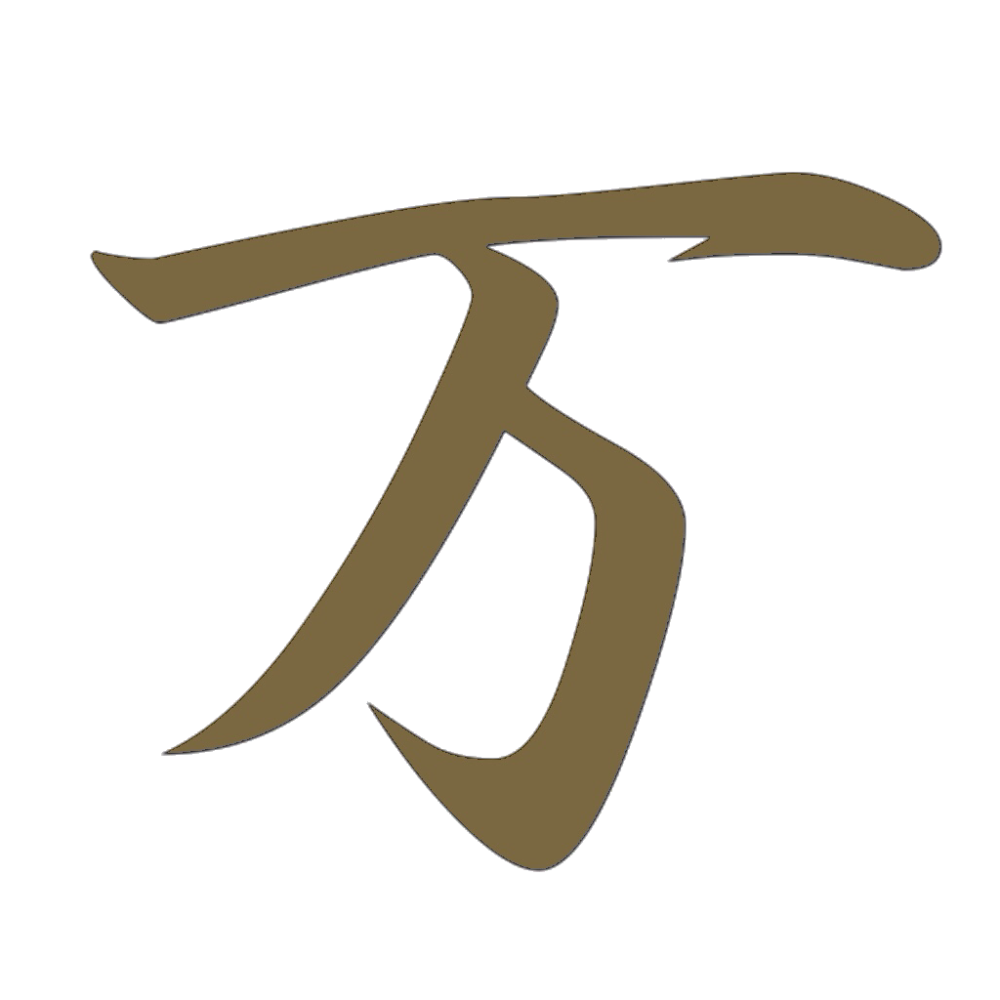
万 (マン / バン) – Ten Thousand
- 一万【いちまん】– Ten thousand
- 万人【ばんにん】– Everyone, all people
- 万歳【ばんざい】– Hooray! Long live! (celebratory shout)
- 万全【ばんぜん】– Thorough, flawless, perfect
- 万一【まんいち】– Just in case, by some chance
- 万物【ばんぶつ】– All things in nature, everything in existence
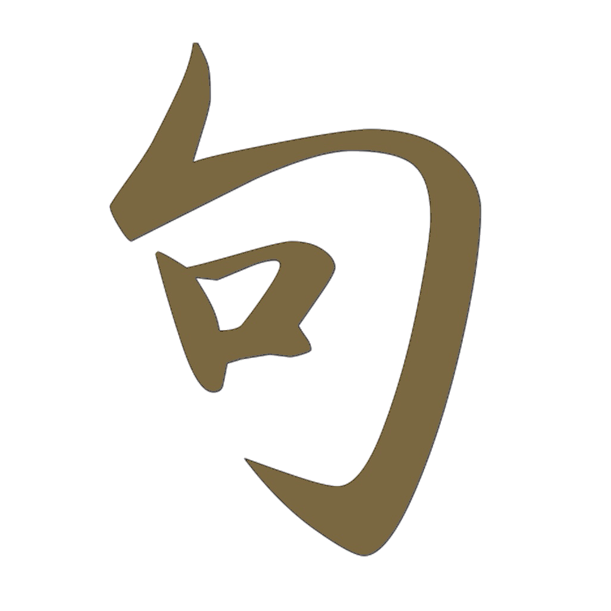
句 (ク) – Phrase
- 句【く】– Phrase, clause (grammar/poetry)
- 文句【もんく】– Complaint; phrase, expression
- 句読点【くとうてん】– Punctuation marks
- 句集【くしゅう】– Haiku anthology
- 熟句【じゅくく】– Idiomatic phrase (rare)
- 警句【けいく】– Aphorism, maxim
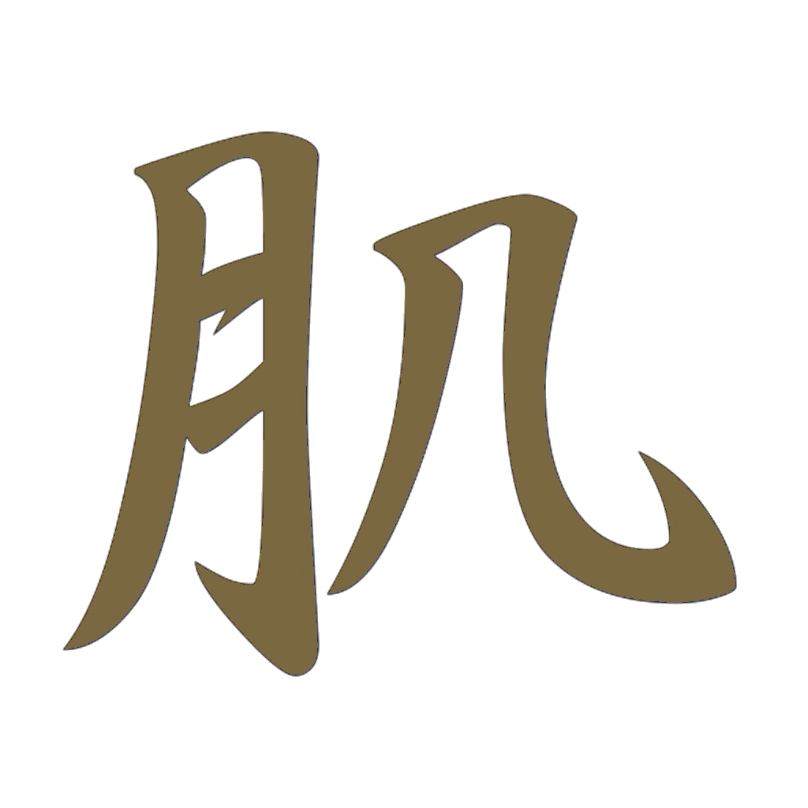
肌 (キ / はだ) – Texture
- 肌【はだ】– Skin, surface (Kunyomi standalone)
- 肌触り【はだざわり】– Texture, how something feels to the touch
- 肌色【はだいろ】– Skin color
- 素肌【すはだ】– Bare skin, natural skin
- 地肌【じはだ】– Natural texture, surface of the skin
- 肌寒い【はだざむい】– Chilly, feeling a chill on the skin
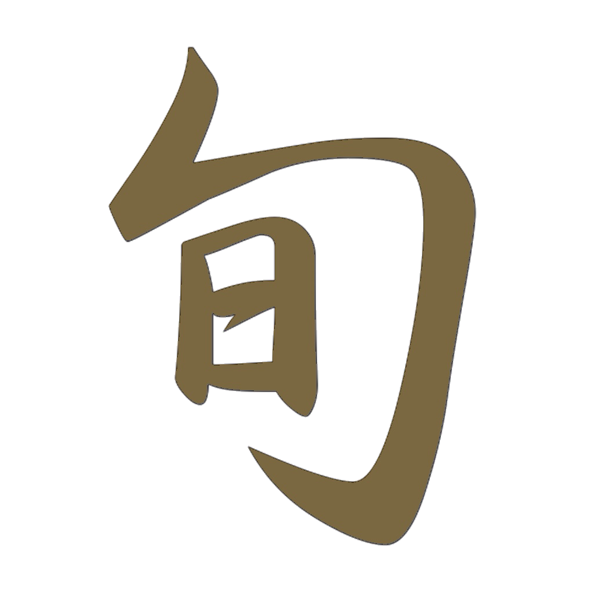
旬 (ジュン / シュン) – Decameron (10-Day Period)
- 上旬【じょうじゅん】– First third of the month (days 1–10)
- 中旬【ちゅうじゅん】– Middle third of the month (days 11–20)
- 下旬【げじゅん】– Last third of the month (days 21–end)
- 旬【しゅん】– In season (for food, especially fish/vegetables)
- 初旬【しょじゅん】– Early in the month (synonym for 上旬)
- 旬報【じゅんぽう】– 10-day report, periodical update
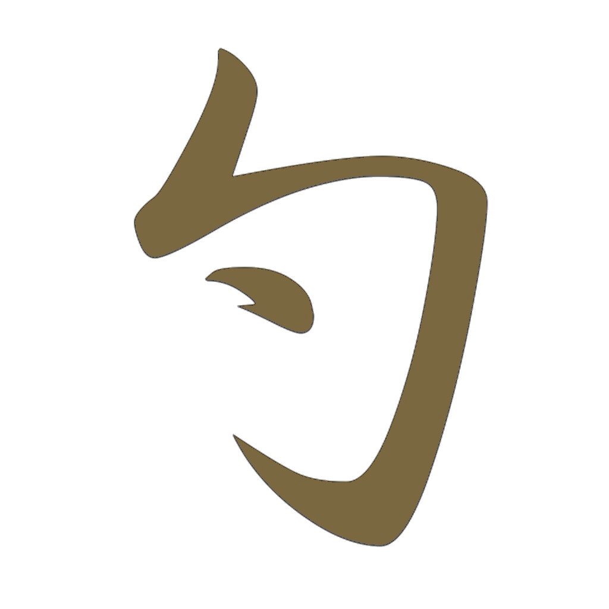
勺 (シャク) – Ladle
- 一勺【いっしゃく】– One shaku (traditional unit, ~18ml)
- 勺【しゃく】– Traditional measure (now rarely used)
- 酒勺【さかずき】– Sake ladle or cup (arch. usage)
- 滴勺【てきしゃく】– Dropper, ladle for drops (rare term)
- 毫勺【ごうしゃく】– Very small quantity (old compound)
- 勺量【しゃくりょう】– Measuring by ladle/spoonful (arch. usage)
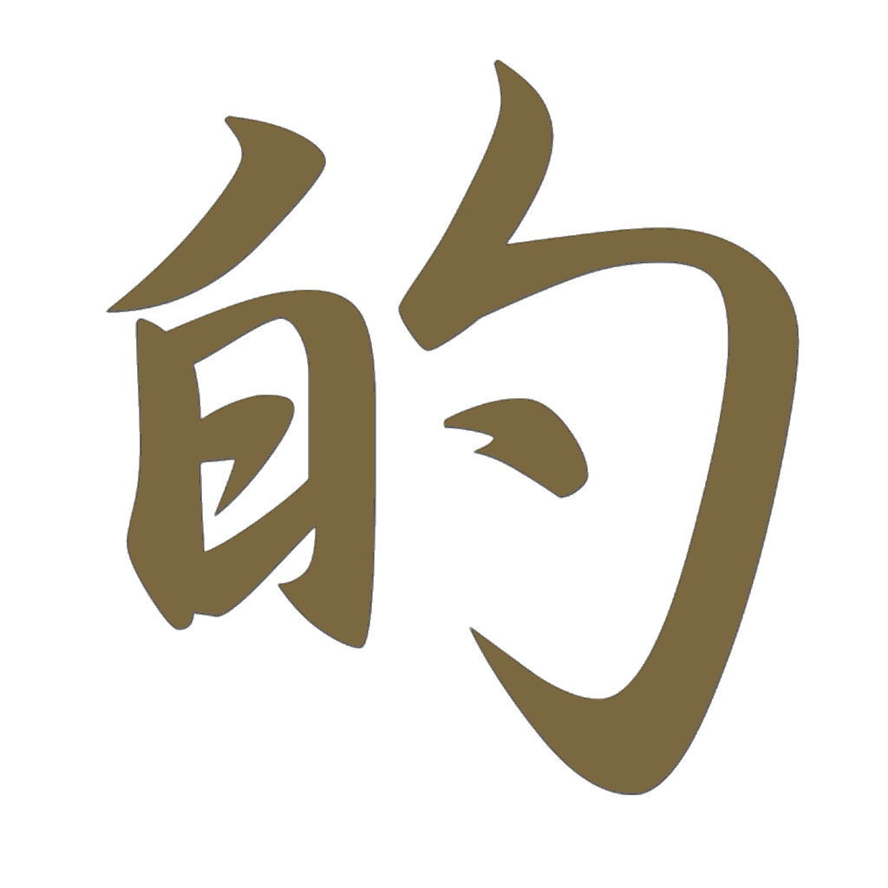
的 (テキ / まと) – Bull’s Eye
- 的【まと】– Target, mark, bull’s eye
- 目的【もくてき】– Purpose, goal
- 具体的【ぐたいてき】– Concrete, specific
- 標的【ひょうてき】– Target (literal or metaphorical)
- 象徴的【しょうちょうてき】– Symbolic
- 効果的【こうかてき】– Effective
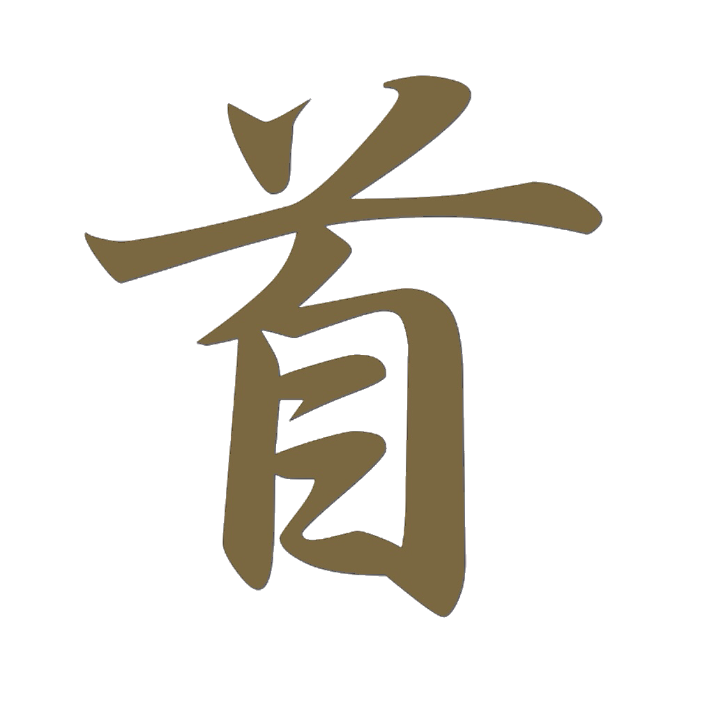
首 (シュ / くび) – Neck
- 首【くび】– Neck (Kunyomi standalone); also used for “head” or “fired”
- 首都【しゅと】– Capital city
- 首相【しゅしょう】– Prime Minister
- 部首【ぶしゅ】– Radical (kanji component)
- 選手【せんしゅ】– Athlete, player (literally "chosen neck")
- 首輪【くびわ】– Collar (for pets, or symbolically for constraint)
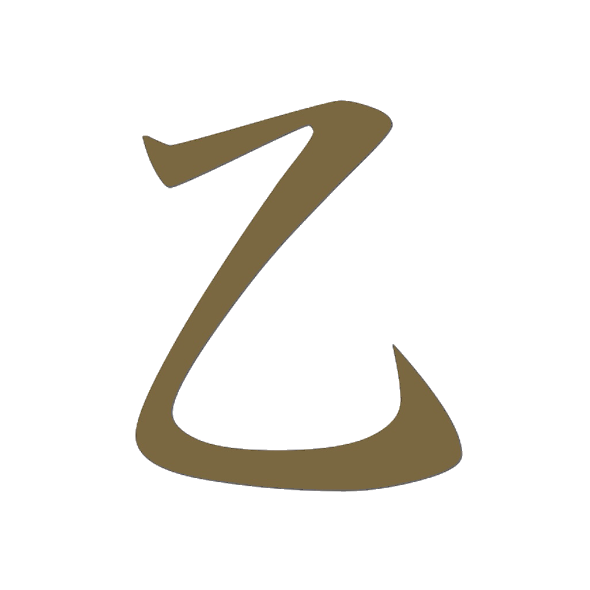
乙 (オツ / おと) - Fish Guts
- 乙【おつ】– Stylish; second in ranking; quirky taste
- 乙女【おとめ】– Maiden, young lady
- 甲乙【こうおつ】– A and B; superior and inferior
- 乙種【おつしゅ】– Type B (e.g., license classification)
- 乙案【おつあん】– Alternate plan (Plan B)
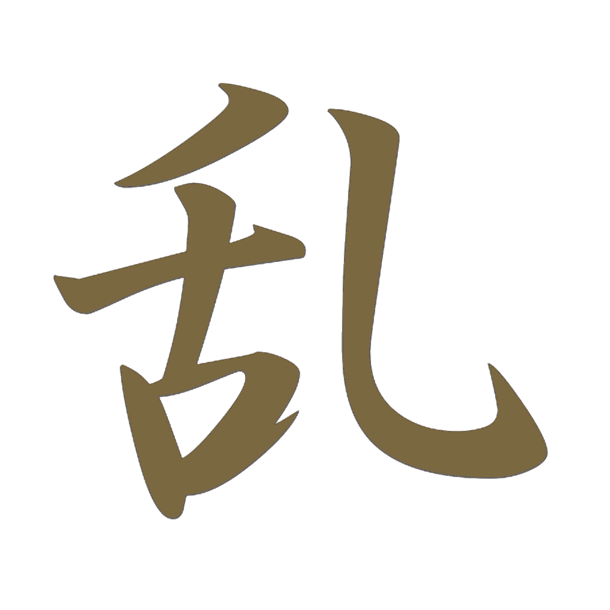
乱 (ラン / みだれる) - Riot
- 乱【みだれ】– Disorder, turmoil
- 混乱【こんらん】– Confusion, chaos
- 暴乱【ぼうらん】– Riot, insurrection
- 乱暴【らんぼう】– Violence, roughness
- 乱用【らんよう】– Abuse, misuse
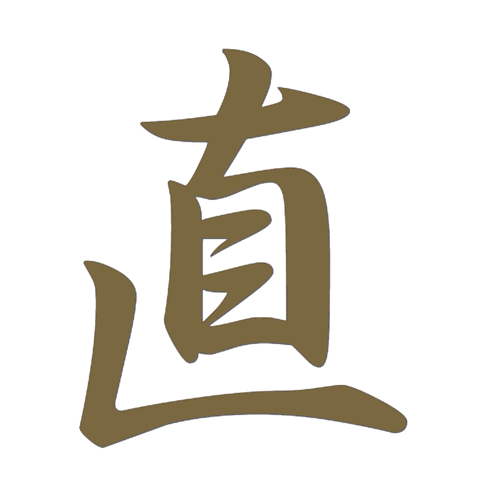
直 (チョク / なおす) - Straightaway
- 直す【なおす】– To fix, to correct
- 正直【しょうじき】– Honesty
- 直接【ちょくせつ】– Direct, immediate
- 直行【ちょっこう】– Going straight (non-stop)
- 直前【ちょくぜん】– Just before
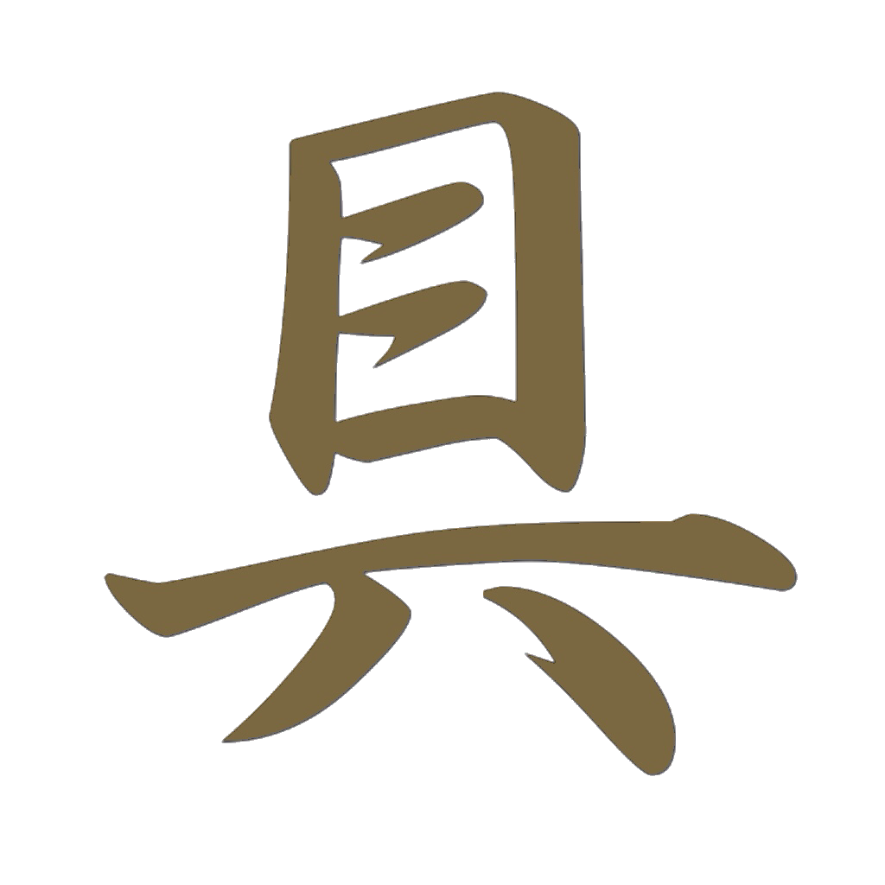
具 (グ) - Tool
- 道具【どうぐ】– Tool, instrument
- 家具【かぐ】– Furniture
- 具合【ぐあい】– Condition, health
- 具現化【ぐげんか】– Realization, materialization
- 筆記具【ひっきぐ】– Writing instrument

真 (シン / ま) - True
- 写真【しゃしん】– Photograph ("copy of truth")
- 真実【しんじつ】– Truth, reality
- 真ん中【まんなか】– Center, middle
- 真夜中【まよなか】– Midnight
- 真剣【しんけん】– Seriousness, earnest
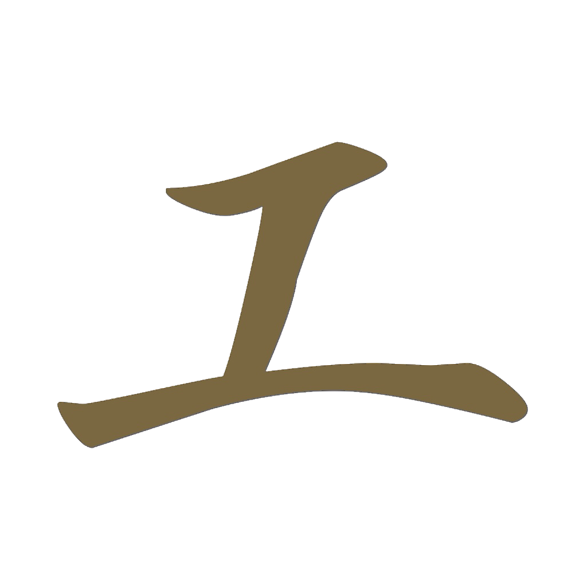
工 (コウ / ク) - Craft
- 工事【こうじ】– Construction work
- 工場【こうじょう】– Factory
- 工学【こうがく】– Engineering
- 人工【じんこう】– Artificial, man-made
- 大工【だいく】– Carpenter